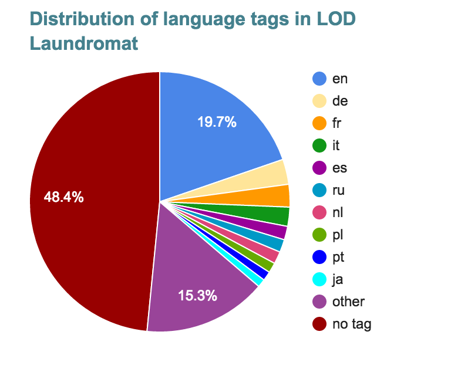

LOD Lab
Running Experiments at Web Scale
2nd May 2017

Wouter Beek (w.g.j.beek@vu.nl, wouter@triply.cc)

How much structured data is there?
- 44.2B statements from Microdata, Embedded JSON-LD, RDFa and Microformats (5.6M PLDs) [WebDataCommons].
- Millions of data documents containing at least 100B statements
- ~600 SPARQL endpoints [Sparqles]
- We know there is much more out there
[1] Web-Scale Data Access
Generalizability of Semantic Web research?

ISWC 2014 Research Track: 17 datasets; 1-6 datasets per paper (avg 2).
Reproducibility & generalizability
- Data cleaning is largely manual
- Data cleaning effort is linear in terms of the number of datasets
- High cost per evaluation, disincentivizing reproducibility
- High cost per dataset, disincentivizing generalizability
lodlaundromat.org


Best Linked Open Data Application Award 2015 Beek & Rietveld & Bazoobandi & Wielemaker & Schlobach “LOD laundromat: A Uniform Way of Publishing Other People’s Dirty Data” ISWC, 2014.
Web-Scale Experiments
 L. Rietveld & W. Beek & S. Schlobach, “LOD
Lab: Experiments at LOD Scale”, International
Semantic Web Conference, 2015 (Best Paper
Award).
L. Rietveld & W. Beek & S. Schlobach, “LOD
Lab: Experiments at LOD Scale”, International
Semantic Web Conference, 2015 (Best Paper
Award).
[2] Web-Scale Data Quality
Web-Scale Data Quality Improvement
Web-scale Data Quality Improvement
 W. Beek & F. Ilievski & J. Debattista &
S. Sclobach & J. Wielemaker, “Literally
Better: Analyzing and Improving the Quality of
Literals”, to appear in Semantic Web
Journal.
W. Beek & F. Ilievski & J. Debattista &
S. Sclobach & J. Wielemaker, “Literally
Better: Analyzing and Improving the Quality of
Literals”, to appear in Semantic Web
Journal.
Web-scale Data Quality Improvement

[3] Empirical Semantics
(by running Web-Scale experiments)
Take age-old statements from Analytic Semantics…
… and evaluate them empirically WRT Data on the Web
E.g., “Names are chosen arbitrarily and have no meaning.”
Names on the Web

Quantifying the Meaning of Names
FORMAL
MEANING
MEANING
NAMES
encode(FORMAL_MEANING) + encode(NAMES)
- encode(FORMAL_MEANING + NAMES)
= Mutual Information
Two hypotheses
$H_X$: Names do not encode predicate information
$H_Y$: Names do not encode type information
$H_X$ (predicates) and $H_Y$ (types) evaluated for 600,000 datasets
 S. De Rooij & W. Beek & P. Bloem &
S. Schlobach & F. Van Harmelen, “Are Names Meaningful?
Quantifying Social Meaning on the Semantic Web”,
ISWC, 2016.
S. De Rooij & W. Beek & P. Bloem &
S. Schlobach & F. Van Harmelen, “Are Names Meaningful?
Quantifying Social Meaning on the Semantic Web”,
ISWC, 2016.
[4] Structured + Web-Scale Querying
Online structured query endpoints (SPARQL)
 sparqles.ai.wu.ac.at
sparqles.ai.wu.ac.at
Unique opportunity
- ClioPatria Wielemaker & Beek & Hildebrand & Van Ossenbruggen, ‘ClioPatria: A SWI-Prolog Infrastructure for the Semantic Web’ in Semantic Web Journal, 2016.
- Header Dictionary Triples (HDT) Fernández & Martínez-Prieto & Gutiérrez & Polleres & Arias, ‘Binary RDF representation for publication and exchange(HDT)’ in Web Semantics: Science, Services and Agents on the World Wide Web, Vol. 19, p. 22-41, 2013.
- Comodification of SSD
[5] Semantics & Graph Structure
skos:exactMatch

foaf:knows

osspr:contains

geopolitics:hasBorderWidth

[6] Semantic Search
LOD Search
 2nd place, Linked Data
Challenge, 2016.
F. Ilievski & W. Beek & M. Van Erp &
L. Rietveld & S. Schlobach, “LOTUS: Adaptive Text
Search for Big Linked Data”, ESWC,
2016.
2nd place, Linked Data
Challenge, 2016.
F. Ilievski & W. Beek & M. Van Erp &
L. Rietveld & S. Schlobach, “LOTUS: Adaptive Text
Search for Big Linked Data”, ESWC,
2016.
lodsearch.org

[7] Web-Scale Theory of Meaning
owl:sameAs has 2 meanings
Formal meaning

$$a = b \,\longleftrightarrow\, (\forall P)(Pa = Pb)$$
Social meaning

“Include links to other URIs, to discover more things.”
Contextual semantics for owl:sameAs
 Beek & Schlobach & Van Harmelen, ‘A
Contextualised Semantics for
Beek & Schlobach & Van Harmelen, ‘A
Contextualised Semantics for owl:sameAs’
in International Semantic Web Conference,
p. 405--419, 2016.
Thank you!
Mail: w.g.j.beek@vu.nl
WWW: lodlaundromat.org, lodsearch.cc, wouterbeek.com, triply.cc